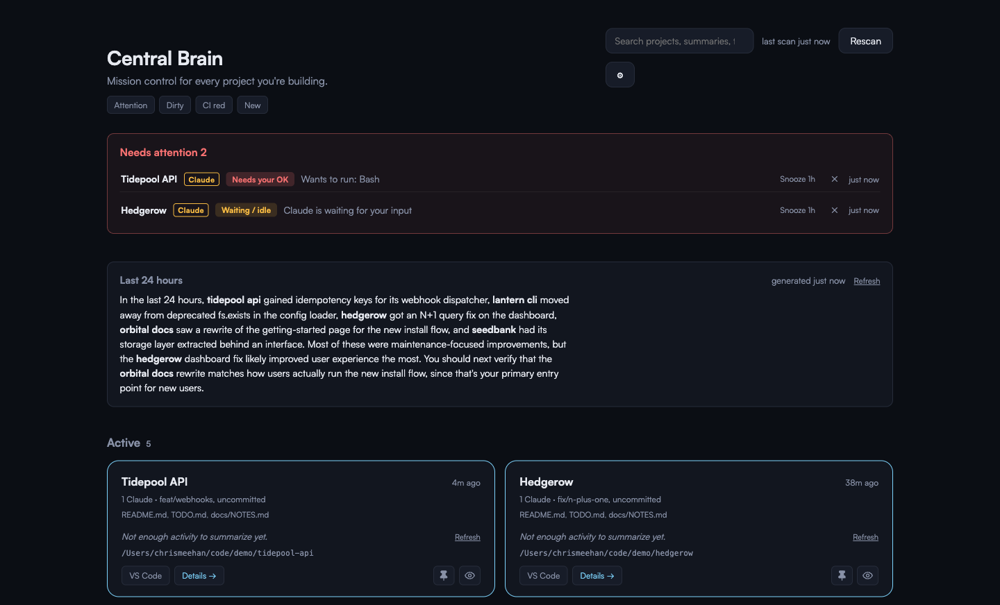

BETA macOS, Apple Silicon. MIT licensed.
Know the moment an agent is waiting on you.
Central Brain is a local dashboard for running more AI coding agents than you can keep an eye on. It finds your projects on its own, watches every Claude Code and Codex session, and tells you the second one of them stops and waits for a decision.
brew install --cask chrismeehan20/tap/central-brain
View the source
Runs entirely on your machine. There's no account to make and no server to talk to.

The real dashboard, running against demo projects.
The bottleneck is not the agents.
You start four agents before lunch. One finishes in ten minutes. One hits a permission prompt ninety seconds in and sits there, silently, until you happen to look at that terminal tab again. The other two are somewhere in between and you have no idea which.
It's you, not knowing which one needs you.
Central Brain answers that question in one window, and pushes the answer at you instead of waiting to be asked.
What it does
Your projects show up on their own
Central Brain reads ~/.claude/projects and
~/.codex/sessions, the same stores the CLI and the VS Code extension
already write to. You never register a project or point it at a folder. Start
working somewhere new and it appears on the next scan with a New badge.
You get told, instead of having to check
A Claude Code hook posts to the app as soon as a session hits a permission prompt or goes idle waiting on you. Your Mac fires a desktop notification, and a panel pins itself to the top of the dashboard, live over server-sent events. Stop, SubagentStop, and your next prompt all clear it silently, because by then you're back at the keyboard.
Codex stays covered even while it's quiet
Codex has hooks too, but they only fire once you approve them by hand inside Codex. Until that happens, Central Brain watches for a rollout file that stops growing mid-session and flags it as "maybe waiting," labeled as the guess it is. Once real Codex hook events start landing, the heuristic stands down and drops everything it guessed.
The links point at real files
README, TODO, STATUS, PLAN, CLAUDE.md, and anything under /docs get
surfaced per project and open straight in your editor. What you're looking at is
your actual source of truth, not a summary of a chat log.
Branch, PRs, and CI without a new token
Central Brain shells out to git and your existing gh login
for branch, dirty state, ahead and behind counts, open PRs, and CI status. Nothing
to authorize, no OAuth flow to sit through. If gh isn't installed, the
app drops those fields quietly instead of nagging.
One line on what's left, if you want it
Claude Haiku can write a one-line summary per project from its docs and recent session activity. It's hash-gated, so it won't run again until something actually changed, and only projects touched in the last 30 days summarize on their own. Bring an Anthropic key or skip the whole feature. Everything else works without one.
Rename, hide, pin
Auto-discovery hands you every folder you've ever worked in, including the junk. Rename one to a real product name, hide what you don't care about, pin what you do. Those decisions survive every rescan. You can also mute notifications without losing the panel, and point every doc link and Open button at VS Code, Cursor, VSCodium, or Windsurf.
Nothing leaves your machine
Everything lives as plain JSON in
~/Library/Application Support/central-brain/. No SaaS and no external
server. The only network calls are the AI summary requests you turn on yourself.
Install it
You need an Apple Silicon Mac and Node.js 22.12 or newer. Any install method works, since Homebrew, nvm, volta, fnm, asdf, and mise all get found automatically.
The gh CLI is optional and gives you GitHub status.
terminal-notifier is optional and gives you nicer notifications.
brew install --cask chrismeehan20/tap/central-brain
You can also download the .dmg from the
latest release
and drag Central Brain.app to /Applications.
Then clear the quarantine flag once. The app isn't Apple-notarized yet, so macOS quarantines it on first launch:
xattr -dc "/Applications/Central Brain.app"If you'd rather not run that, launch the app and approve it under System Settings, Privacy and Security, Open Anyway.
That's the whole install. The app runs its own server, so there's no separate service to start. On first launch the dashboard offers to wire the "an agent is waiting on you" hooks into Claude Code and Codex, one click each. The installer backs up your settings first and only appends, so hooks you already have keep working.
One caveat about Codex: it won't run any hook until you approve the hook config once, by hand, inside Codex. Until you do that, no Codex hooks run at all, and Codex doesn't tell you so. The staleness heuristic covers the gap in the meantime.
The app checks GitHub Releases on launch. When an update is out, the tray menu offers it. Installing is always your click, and the download is verified against a signing key baked into the app.
This is beta software
And here's what that actually means.
- macOS only, Apple Silicon only. The server itself is portable Node, so a determined Linux or Windows user could run the bundle and use the browser dashboard, but nobody has packaged that path and I don't support it.
- Not Apple-notarized. You clear the quarantine flag by hand, once.
- Codex alerting falls back to a heuristic whenever Codex hooks haven't been approved, or have gone quiet for more than a week.
- Claude Code's Notification hook conflates "truly blocked" with "idle for about a minute." Both of them show up as waiting.
- Project identity is the filesystem path. Move a repo and it comes back as a new project, and your old rename and hide decisions for the old path don't follow it.
I use it every day. It's MIT licensed, and bug reports and pull requests are welcome.